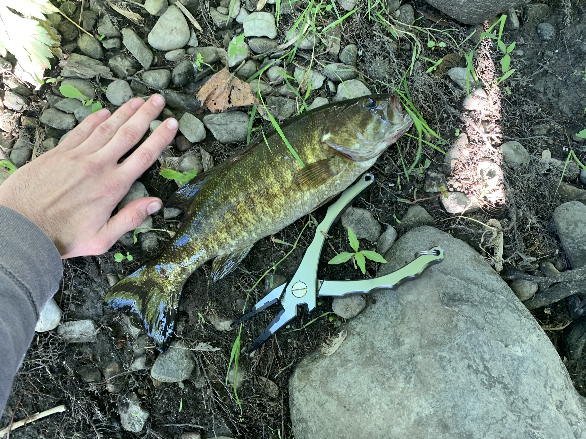

While I'm slightly older and smarter now, in Highschool id often fish the Wallkill River in Middletown NY by wearing a swimsuit and water shoes and wadding down river from the public access point to the Bridge. Id fish the way down and the way back up as well. This was successful for catching 8 – 12 inch smallmouths. Almost every single time I'd go in the Moring, I would catch 5-15 fish in 2-3 hours. I never caught any real gigantic fish in this spot, the largest was around 16 inches long, weighing 2-3 lbs. 14–16-inch fish were common, but it was not a guarantee to catch them.
The tactics that I used to catch so many fish were to cast into breaks in the current and especially wherever the water was ripping around a large rock or a fallen tree. The tackle i would take with me consisted of a single strap pack, a Daiwa samurai 6-foot rod/reel combo with 6-8 Lb line and a Daiwa bait caster with 50lb braid. Depending on the day I would leave the bait caster in the car because honestly the smaller spinning rod was more ideal for the low hanging trees, and the lightweight tackle made catching the smaller fish more fun. On the spinning rod I would cast with inline spinner baits, Zoom Fat Alberts with split shots or a swim jig head, or Keitech Swing Impacts. The bait caster typically had topwater, a jig, or a crankbait.
The most efficient way I found to fish this strip of river was to use my spinning rod with an inline spinner and toss it upriver pulling it near current brakes and reeling in quickly. The little smallmouths that littered this strip would strike aggressively on fast moving lures early in the morning, while its still slightly dark out. If I caught one on a break that I could target by standing on a rock or on the shoreline I would stop and fish that same spot, often enough within a few minutes i would catch another, there was times I would catch 4-7 fish in the exact same spot in a 20–30-minute period. Usually, the more fish that I would catch in the same spot the smaller the size of them.
A Final NoteWhile I had a lot of success with my tactics i have not been to the Wallkill to fish while wadding in 5-6 years, It was brought to my attention that i was fishing down river of a water treatment plant that disinfected and returned sewage water to the Wallkill, as well as the Wallkill having issues with containing the pesticide DDT according to online sources. While I did not suffer any serious issues yet from wadding in the Wallkill, there's probably better alternatives, such as a raft and floating the river, or wearing waders and sticking to the shallow water and shorelines. I am not sure as to who owns the shorelines, however i didn't see any posted signs and believe a large chunk is government owned.